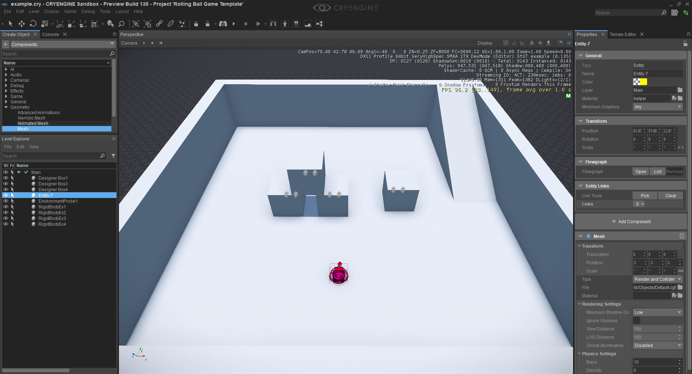
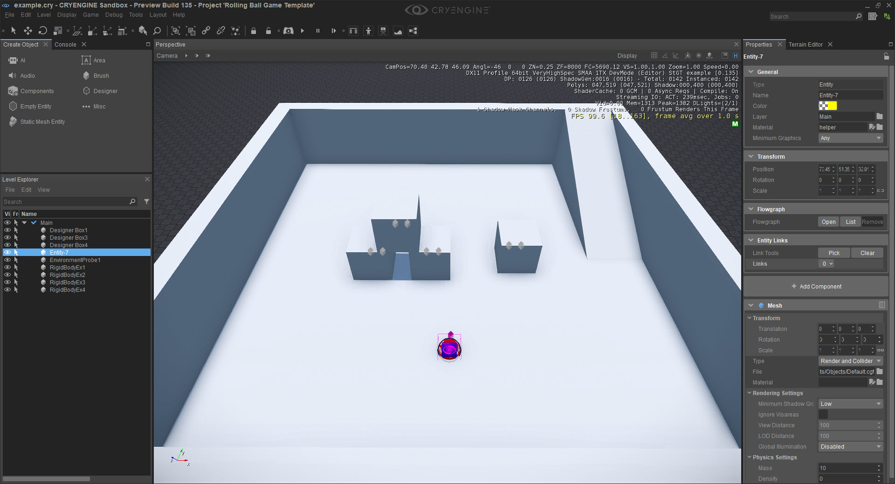
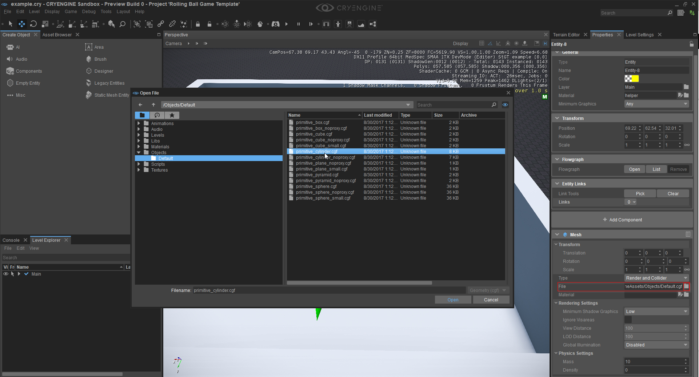
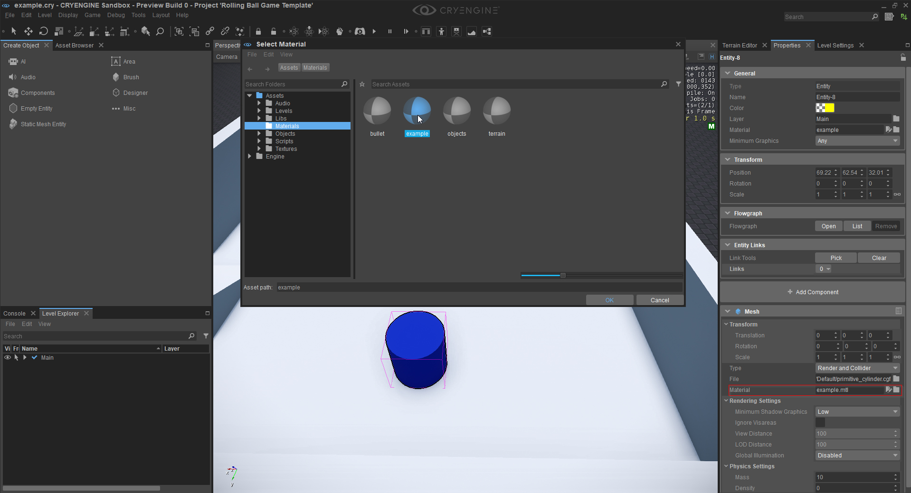
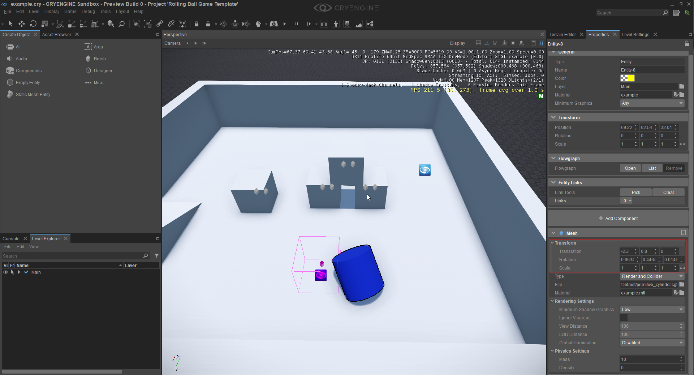
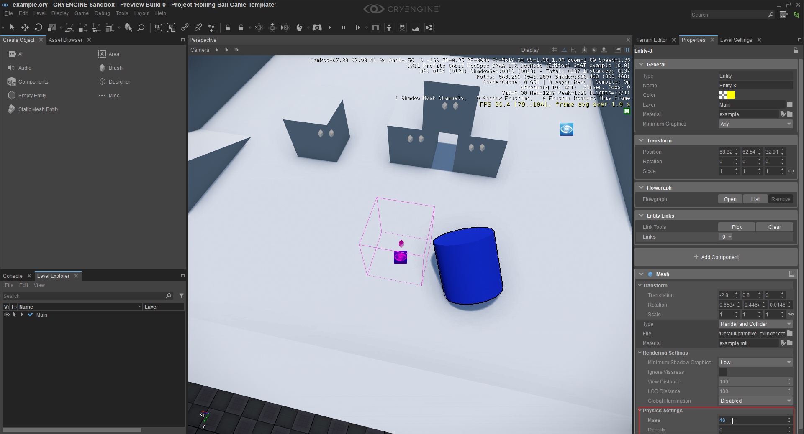
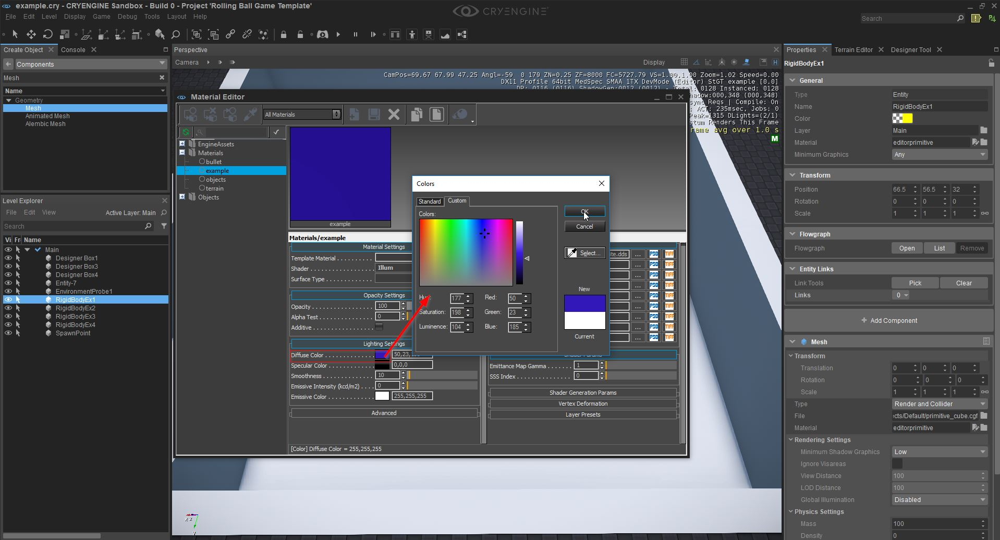

Использование компонента сетки
Это руководство концентрируется на Mesh-компоненте и служит введением в его использование и некоторые его функции. Компонент Mesh в основном используется для придания геометрии объекта и его визуального представления.
Прежде чем приступить к изучению этого руководства, мы рекомендуем вам прочитать Компоненты сущности документация. Это даст вам гораздо лучшее понимание концепций, лежащих в основе C.Компоненты сущности RYENGINE, кроме того, документацию можно использовать в качестве справочного руководства по различным атрибутам/параметрам, которые относятся к каждому из доступных Компонентов.
Для создания новой сущности можно использовать разные методы. Для получения дополнительной информации см. Компоненты сущности документация.
Чтобы пройти это руководство, вам нужно будет открыть новый или существующий уровень в редакторе Sandbox.
- Метод компонентов. В инструменте «Создать объект» щелкните левой кнопкой мыши значок «Компоненты» — откроется меню «Компоненты». Разверните соответствующее меню (в данном случае меню «Геометрия») и выберите «Сетка». Перетащите и закрепите компонент сетки на своем уровне (все это осуществляется левой кнопкой мыши). Компонент сетки теперь будет выделен на уровне, и параметры компонента вместе с панелью свойств будут видны, что позволит пользователю устанавливать различные параметры.

- Пустой метод сущности. В инструменте «Создать объект» щелкните левой кнопкой мыши значок «Компоненты пустого объекта», затем перетащите и закрепите пустой объект на своем уровне (все это осуществляется левой кнопкой мыши). Пустой объект будет выделен, следующим шагом будет добавление компонента сетки с помощью кнопки + Добавить компонент (под панелью свойств). Примечание. Компонент Mesh уже добавлен на изображении ниже.

- Независимо от того, какой метод создания объекта использовался, сетка по умолчанию будет создана, теперь нам нужно заменить эту сетку по умолчанию. Для этого перейдите к параметрам свойств вашего компонента сетки и щелкните символ папки. Откроется диалоговое окно «Открыть файл», затем перейдите в папку Objects\Default\. Нажмите на папку «По умолчанию» и выберите одну из сеток по умолчанию из доступных. Для этого урока мы выбрали primitive_cylinder.cgf. Наконец, double нажмите кнопку открытия, чтобы принять новую сетку. Если вы хотите импортировать свою собственную геометрию, посмотрите FBX Импорт.

- Для создания нового материала откройте Material Editor Наследие Инструменты → Material Editor.

- В редакторе материалов щелкните правой кнопкой мыши папку, в которой должны быть сохранены материалы, и выберите «Добавить новый материал». Во всплывающем окне «Сохранить файл» вы можете изменить путь и дать материалу имя, если вы закончили с этим, нажмите кнопку «Сохранить».

- Теперь вы можете увидеть свой новый материал. Он меняет цвет материала, вам нужно сначала добавить текстуру к атрибуту «Diffuse». Нажмите на три точки рядом с атрибутом, и вы сможете начать выбирать текстуру, которую хотите иметь. Для этого примера используйте текстуру «Engine/EngineAssets/Textures/white.dds» и нажмите кнопку «OK».

- Чтобы изменить цвет вашего материала, щелкните поле цвета рядом с атрибутом «Рассеянный цвет» и выберите любой цвет, который вы хотите.

- Сохраните материал с помощью значка сохранения (посередине вверху) и закройте Material Editor.
- На следующем шаге мы собираемся изменить материал нашего компонента «Сетка» — атрибут «Материал» можно найти под атрибутом «Файл», который мы использовали на шаге 3. Теперь либо double щелкните параметр ручкой, где вы можете напрямую настроить уже примененный материал, либо вы double щелкните значок папки, чтобы назначить новый материал для вашей сетки. Выберите ранее созданный материал.
Теперь вашей сетке будет назначен другой материал. Вы также можете управлять трансформацией вашей сетки. Например, если вы хотите повернуть или переместить сетку, но не объект, вы можете изменить значения атрибута «Трансформировать».
Преобразование происходит относительно исходного положения вашей сущности в мире.Последнее, что мы сделаем, это изменим физические свойства нашей сетки.
Компонент Mesh не будет иметь никаких столкновений или физической симуляции, пока вы не добавите компонент Rigid Body к объекту.Эта тема будет рассмотрена в другом уроке, когда мы более подробно обсудим физику. Вы также можете изменить массу или плотность вашего объекта (при этом одно рассчитывает другое). Чтобы изменить значение массы или плотности, перейдите к опции «Настройки физики» и введите значение.
Колесо мыши можно использовать для быстрой настройки значения.